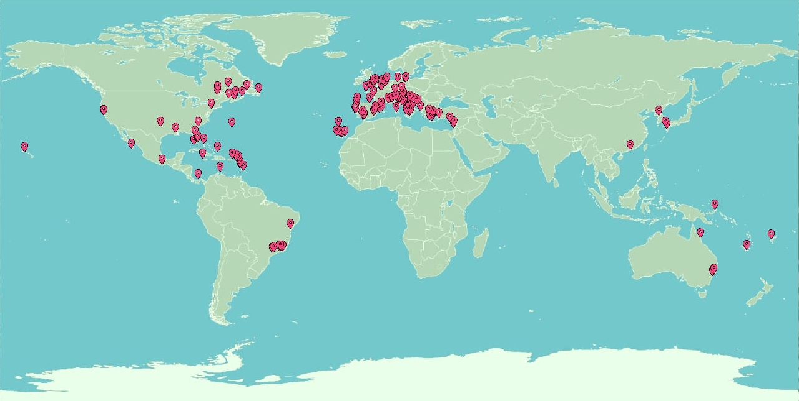

My Hobbies
Mixing new, different drinks
Throwing random fun facts in otherwise normal conversations
Playing The Sims for a ridiculous amount of time
Series
Photography
I love travelling. These are the places I've been:

Need travel advice?
You can talk to me here.
I cant stop listening to music! This is my latest obsession:
Go back to my profile